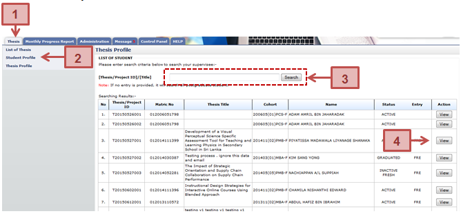

View the student details which has the Student Profile, Supervisor/Co-supervisor lists, Subject Taken and Thesis History.

Figure 6: Thesis Tab
Prerequisite
All the postgraduate student record has been registered into the system
Steps
- Click on the Thesis tab on the system Top panel section.
- The Student Profile menu will be displayed on the system Left panel and click on it.
- The searching page will be displayed which the user can search for a particular thesis in order to view its detail. Enter the Thesis ID or Title. into the field and click on Search button to search the thesis
- The record will be displayed under the search result. Locate the student from the list and click View button to view the profile details
Next Action
View the Student Profile, Supervisor/Co-supervisor lists, Subject Taken and Thesis History
Warning
None
Note
None
Created with the Personal Edition of HelpNDoc: Full-featured EBook editor